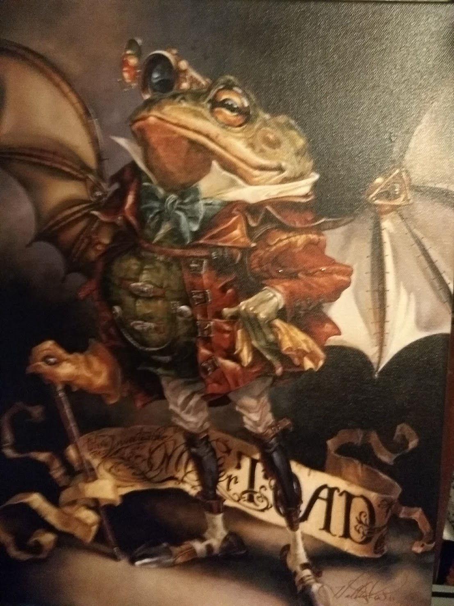

It's never the wrong time to call on Toad. Early or late he's always the same fellow. Always good-tempered, always glad to see you, always sorry when you go!

Why Mr. Toad?
My name is Todd. When I was a teenager my younger brother would torment me by calling me "Toad"
mainly because it made me mad. Kids being kids it only made him do it more. Eventually I learned to not let it
bother me and embraced it. Hence, Mr. Toad.